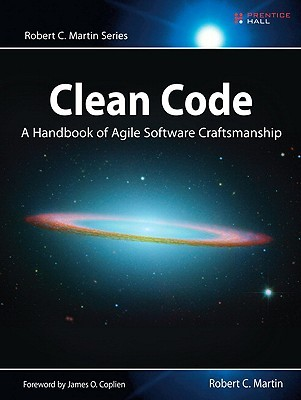
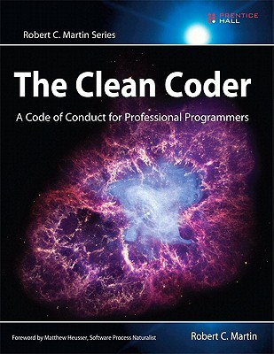
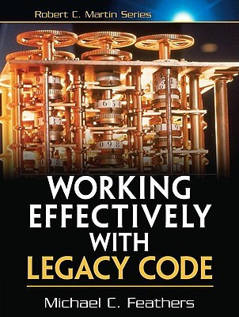

Static: The S in STUPID
Presentation by @JeroenDeDauw
bit.ly/static-code
Conclusion
- TODO
These slides
CC BY-SA 3.0, Jeroen De Dauw
Clone from GitHub or view at bit.ly/static-code
Instead of me
  